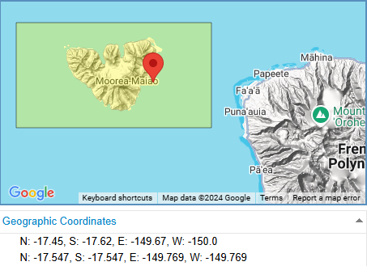
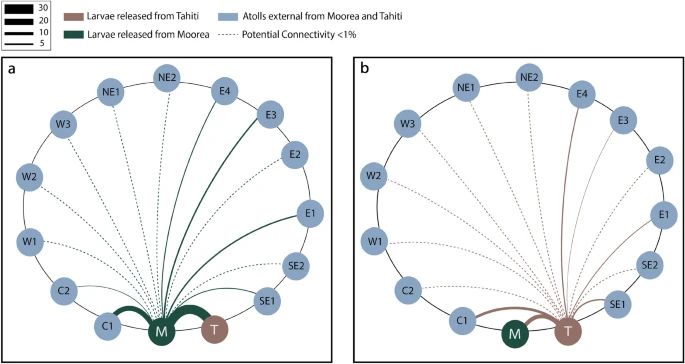
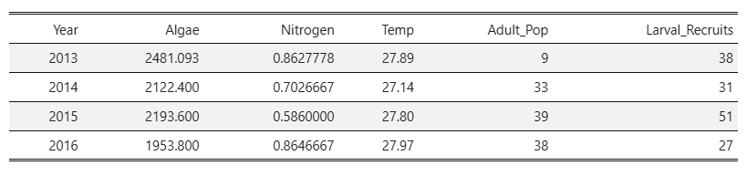
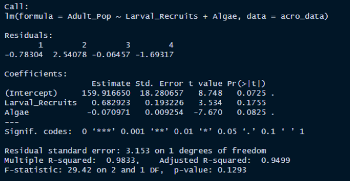
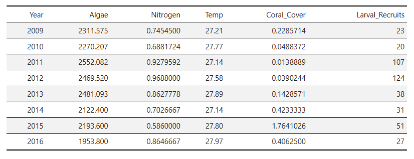
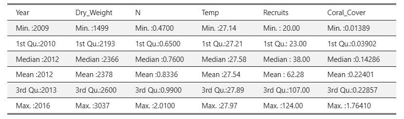
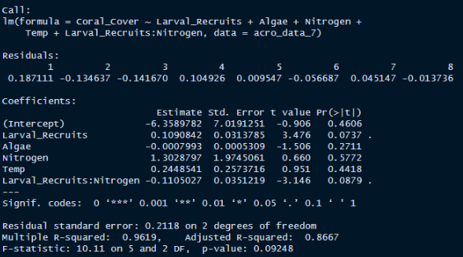
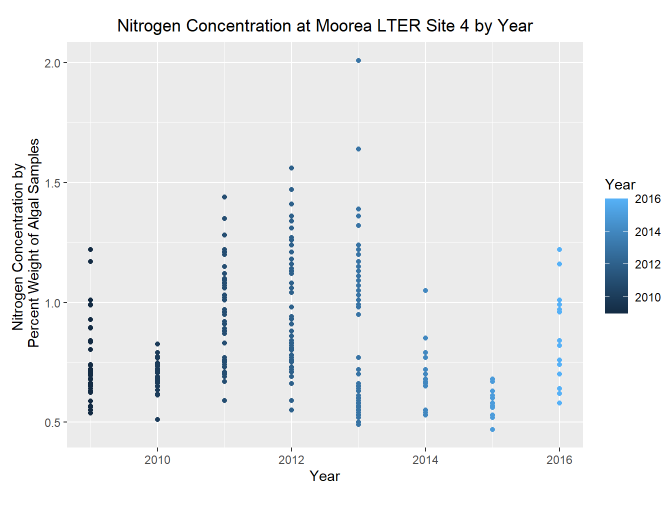
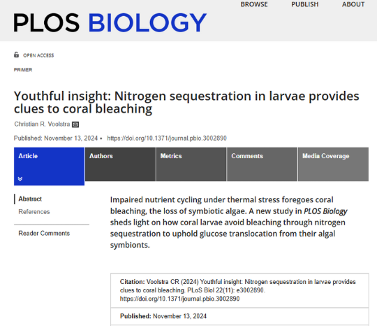

A little bit of background…
Due to global stressors, reef systems around the world have been decreasing in coral biomass. Mass bleaching events, as a result of increased sea surface temperature, have dramatically increased adult coral mortality overall.1
To forestall the effects of climate change, it is important to mitigate local stressors, which can exacerbate the negative effects of increased acidity, or temperature.
One such major stressor is an increased concentration of nitrogen or phosphorus in the water column, referred to as “nutrient pollution”. As corals are best suited to nutrient poor systems, excessive amounts of nitrogen typically lead to increased coral mortality, whether via algal smothering, rapid proliferation of dinoflagellates (that leads to high body temperatures or lysed cells), or increasing coral disease.2
While adult corals’ high symbiont load allows them to utilize much of the nitrogen in the water column, greatly decreasing their aversion to ammonia and limiting the spread of disease, coral larvae have much smaller symbiont loads.
In the case of horizontal transmission, coral larvae slowly take in their symbionts from the water around them before and during recruitment. It has been postulated that this low symbiont load would cause corals at this life stage to be disproportionately affected by nutrient pollution, as they are not able to maximize the benefit of this resource while protecting themselves from its disadvantages.3
To investigate this hypothesis, I decided to take a look at a small population of broadcast spawning corals on the island of Moorea, in French Polynesia, and their relationship to algae and nitrogen levels in their environment.
Moorea Long-Term Ecological Research Site 4:
Out of the three sites with available data, I selected Site 4 for this study based on larval connectivity models from the region4 5. Based on current patterns and broadcast spawning patterns of nearby reefs, Site 4 would likely have the most recruits, and therefore the most information on coral larval survival.
This meant that all data sets I worked with had to be filtered to only observations from Site 4 of the LTER when applicable.

- Of this data, I chose only a single species to analyze (due to time constraints), and selected the species with the highest sensitivity to temperature and chemical change as a result of its low tissue density: Acroporidae. It should be noted that coral taxonomy information was only recorded at the genus level, as it can be very difficult to species ID coral, especially Acropora.
Question and Hypotheses:
- I was interested to see if there was any correlation between nitrogen concentration and larval recruitment for this region, and what effect this would have on the adult coral population. Ultimately, I decided on a linear regression model with an interaction clause between nitrogen and larval recruits, and coefficients for the effect of temperature, algal biomass, and larval recruits to predict the adult coral population. My hypothesis were as follows:
H0: Nitrogen has no correlation with larval recruits (coefficient is not significant), and thus no effect on the adult population.
HA: Nitrogen does correlate with larval recruitment (coefficient is significant), and thus has an effect on the adult population.
Data Access:
All data sets are publicly available on the Moorea LTER website. Here are links to each of the data sets used:
Current Patterns and Biochemistry at Mooring Site FOR04 - This physical and biochemical data set contained a lot of highly sampled information, but for this project I only used ‘upper water column temperature’ to determine trends in annual temperature change.
Coral Recruitment Data (island wide) - This data set involved counts of recruited corals to at each of the LTER sites. Observations were recorded by year, but not more specific than January-September, or September-January. This is likely due to aggregated spawning periods for each species recorded.
Macroalgae and Nutrient Pollution (island wide) - This data set records macroalgal pollution via dry weight of samples collected from the upper water column. A separate data set provided algal biomass at the benthic level, but was not utilized due to time constraints. nitrogen concentration is approximated from macroalgal data by recording percent weight nitrogen from the samples.
Demography Information for Three Key Coral Species (island wide) - The demography information records counts and measurements (length, width, depth) of corals on the reef. Based on this data set, average adult counts per year were recorded.
Percent Stony Coral Cover by Species (island wide) - This data set utilizes multiple transect surveys across each LTER site, and approximates percent coral cover of each 0.25 square meter grid. This information is used to compile average annual coral cover for Site 4.
Methods:
Model 1:
I first loaded in the data sets and assigned them to relevant variables. Unfortunately, some of the data sets only recorded the year for each observation, despite having many observations within the same year.
Therefore, I was not able to assess the effect of seasonality on nutrient pollution and larval recruitment (two highly ephemeral phenomena. After filtering to years of overlap between all sets, data was cleaned and I began joining sets to allow for ease of summary.
For the first regression, we had almost no data points to work with, as the data was isolated to a three year time period by the adult coral counts collected from the demography data set.

- This lack of data meant that I could not run a linear model with an interaction coefficient, and thus chose to look at the relationship between algae, larval recruits, and adult population size.

- In this original model, none of the coefficients are considered significant at a 90% confidence level (alpha of 0.05 for a two tailed test), and we fail to reject the null hypothesis. While there is a high adjusted R-squared value for this model, it is unlikely that’s an accurate representation of the correlation of our variables, due to the small sample size.
Model 2:
- In order to utilize more of the data provided, I decided to look for a different metric of adult population size. I ended up using percent coral cover on the reef as a metric of adult coral growth and recruitment success. Since I was not able to effectively utilize the size metrics from the demography data regarding each adult count, this seemed an appropriate way to get a better approximation of overall contribution to the reef.

- With a bit more data to use (about 220 observations), I could now get a little bit better of an idea as to how algal biomass, nitrogen concentration, and coral cover were distributed by year.

- And with this data set, I was finally able to run a linear regression model with an interaction clause.

For the second model, while an interaction between nitrogen and larval recruits yielded the most magnanimous result, which falls in line with the alternate hypothesis, the coefficients could still not be considered significant at a 90% confidence level (alpha of 0.05 for a two tailed test). Once again, we fail to reject the null hypothesis.
The adjusted R-squared value for this model is oddly high, which leads me to conclude that either a.) my sample size is much to small to accurately represent the correlation between these variables, or b.) we are fairly confident that nutrient pollution is not majorly affecting the larval population.
Investigating our results:
Trends in Our data:
- Truthfully, I was not expecting there to be such a small effect from nutrient pollution (nitrogen concentration) on annual larval recruits. I decided to take a look at my 7 year data set I used in the previous linear regression model to see how nitrogen concentration has been changing over this time period.

This distribution sheds a little more light on my findings. Nitrogen concentration at Site 4 was not increasing over time, as it has been for shallower lagoon sites (like Sites 1-3 of the LTER) and regions with increased urbanization (comparable sites on Tahiti).
Not only do we not have data from warmer years (2018-2024) where algal proliferation may have increased testing of nitrogen concentration and given better indicators of the true environmental values, but this data is also averaged out by year.
As mentioned previously, nutrient pollution and algal biomass increases are highly ephemeral processes (increase with increased rainfall, temperature, or physical ocean processes like upwelling/ nutrient transport that shift with the seasons). If I was to repeat this analysis, I would try to find a data set on adult coral populations and larval recruitment that is at least sampled on a monthly basis.
Coral Larval Metabolic ACtivity:
But the trends in nutrient load for Site 4 may not be the only reason why there seems to be so little effect of nitrogen on larval recruitment and the adult population size!
A few weeks ago, on November 13th of 2024, an article was published investigating the apparent resilience of coral larvae to thermal stress. Through their study, researchers discovered that coral larvae are able to sequester and direct excess nitrogen in their body to their limited symbiont load, almost “force feeding” their dinoflagellates, to produce enough energy to mitigate the hazardous effects of thermal stress.6 The researchers postulate that broadcast spawning coral larvae may even be more thermally tolerant than adult corals, so long as the cost-benefit of this “force-feeding” process ends in recruitment.

This novel metabolic activity would also mean that coral larvae are in fact capable of using nitrogen in the water column to their benefit, while minimizing the impact of it’s negative effects. At the very least, they are capable of bearing with the negative effects of increased nitrogen sequestration very well!
While this is not at all what I was expecting to learn when I first began this analysis, I am happy to have learned about a new biological process in coral larvae, and I’m very excited to see what other studies will come out on this topic!
Link to Repository:
There is a link to the repository provided in the sidebar, where the notebook for this project is housed, in case you would like to run the code for yourself. There is a brief presentation available that runs through the results as well. You can also use this link: Nutrient Pollution on Corals Repository
Footnotes
Zhao, H., Yuan, M., Strokal, M., Wu, H. C., Liu, X., Murk, A., Kroeze, C., Osinga, R. Impacts of nitrogen pollution on corals in the context of global climate change and potential strategies to conserve coral reefs. Science of The Total Environment, 774, (2021). https://doi.org/10.1016/j.scitotenv.2021.145017↩︎
Serrano, X.M., Miller, M.W., Hendee, J.C. et al. Effects of thermal stress and nitrate enrichment on the larval performance of two Caribbean reef corals. Coral Reefs 37, 173–182 (2018). https://doi.org/10.1007/s00338-017-1645-y↩︎
Harnay, P., & Putnam, H. M. Pocillopora meandrina daytime broadcast spawning in Moorea, French Polynesia. bioRxiv (2023). https://doi.org/10.1101/2023.10.05.558016↩︎
Lama, S.J., Lopera, L. & Bracco, A. The role of mesoscale-driven connectivity patterns in coral recovery around Moorea and Tahiti, French Polynesia. Sci Rep 14, 22349 (2024). https://doi.org/10.1038/s41598-024-73185-2↩︎
Ani, C.J., Haller-Bull, V., Gilmour, J.P. et al. Connectivity modelling identifies sources and sinks of coral recruitment within reef clusters. Sci Rep 14, 13564 (2024). https://doi.org/10.1038/s41598-024-64388-8↩︎
Voolstra CR (2024) Youthful insight: Nitrogen sequestration in larvae provides clues to coral bleaching. PLoS Biol 22(11): e3002890. https://doi.org/10.1371/journal.pbio.3002890↩︎